Što ćeš na kraju imati
Jedan DWG s dva lista i dva PDF-a: list 1 – klizač PS1-01-004 (tlocrt, presjek A-A, kote, tolerancije, hrapavost) na A4 u mjerilu 1:1; list 2 – ploča P14 s pet džepova nacrtana u stvarnoj veličini na dvostrukom A4 i ispisana u mjerilu 1:2. Polaziš od svog crteža iz V1. Ovako izgledaju PDF-ovi:
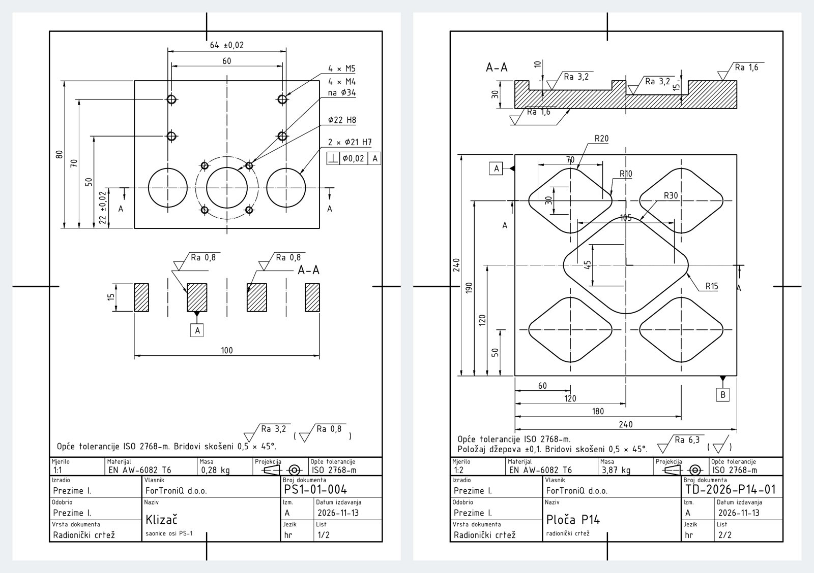
Prije početka pročitaj ovo (2 minute)
- „Klikni“ = jedan klik lijevom tipkom miša. „Upiši“ = tipkaj na tipkovnici.
- Nakon svakog upisa pritisni Enter. U okvirima Upiši uz svaki unos piše Enter – svaki put ga stvarno pritisni.
- Koordinate se pišu X,Y – zarez odvaja X i Y, npr.
210,297. Decimalni broj piše se s točkom, npr.148.5. - Točka
0,0je donji lijevi kut lista. X raste udesno, Y raste prema gore. Sve mjere su u milimetrima. - Pogriješio(la) si? Pritisni Esc (prekida naredbu), a Ctrl+Z poništava zadnju radnju.
- Za ovu vježbu treba ti gotova V1 (list s okvirom, zaglavljem, slojevima i stilom TD_ISO). Ako je nemaš, najprije napravi V1. Postupke iz V2 (kopiranje lista, TEXTEDIT, ispis 2:1) ovdje ponavljamo ukratko.
- Uz svaki korak je kvačica gotovo – označi je kad završiš korak, pa ćeš znati gdje si stao(la).
Ako nešto ne ide
- Piše „Unknown command“ – naredba nije bila pokrenuta. Pritisni Esc, pa ponovno klikni alat (ili upiši naredbu) i tek onda brojeve.
- Ne vidiš što si nacrtao(la) – upiši
ZOOMEnterEEnter. - Crte su na krivom mjestu – provjeri dio B (DYNMODE i OSMODE moraju biti 0) i jesi li pisao(la) točku, a ne zarez, u decimalnom broju.
- Ne znaš gdje si stao(la) – sve koordinate u tablicama su točne; nacrtano usporedi sa slikom koraka. Pogrešnu crtu klikni i pritisni Delete.
- Tekst se ne da kliknuti (TEXTEDIT) – približi ga (ZOOM W) i klikni točno na crtu slova.
- Crta je krive boje ili debljine – bila je odabran krivi sloj. Klikni crtu, pa u popisu slojeva na traci odaberi pravi sloj i pritisni Esc.
Sadržaj
- A. Otvori svoj crtež iz V1 i spremi ga kao V6
- B. Tri postavke na početku
- C. Obriši probu pisma iz V1
- D. Zaglavlje lista 1 – klizač
- E. List 2: dvostruko veći okvir za mjerilo 1:2
- F. Dva stila kota: TD_1-1 i TD_1-2
- G. List 1 – klizač: obris, osi i provrti
- H. List 1 – presjek A-A
- I. List 1 – kote, oznake i tolerancije
- J. List 2 – ploča P14 (crtež 1:1, ispis 1:2)
- K. List 2 – kote i hrapavost
- L. List 2 – zaglavlje
- R. Ispis u PDF
- Z. Spremi, vrati postavke i predaj
AOtvori svoj crtež iz V1 i spremi ga kao V6
1
Pokreni AutoCAD 2027. Na zaslonu Start, pod Recent, klikni sličicu svog crteža iz vježbe 1 (
TD_2026-2027_Prezime_Ime_V01). Ako ga nema, klikni Open… i pronađi ga.

2
Upiši
SAVEAS Enter. U polju File name upiši TD_2026-2027_Prezime_Ime_V06 (svoje prezime i ime) i klikni Save.Upiši:
SAVEAS Enter

Na kartici crteža gore lijevo ime završava s V06. Crtež iz V1 ostao je netaknut.
BTri postavke na početku
3
Upiši redom (nakon svakog Enter):
| Naredba | Vrijednost | Zašto |
|---|---|---|
DYNMODE | 0 | broj koji upišeš znači točno mjesto na listu |
OSMODE | 0 | kursor ne „skače“ na obližnje točke |
GRIDMODE | 0 | nema mreže kvadratića |


CObriši probu pisma iz V1
4
Upiši
ERASE Enter, W Enter, 22,60 Enter, 198,285 Enter, pa još jednom Enter.Upiši:
ERASE Enter W Enter 22,60 Enter 198,285 Enter (Enter)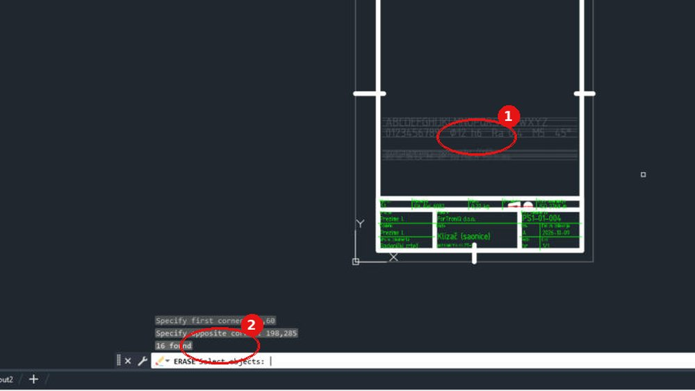

Proba pisma i pomoćne crte su obrisane, a okvir i zaglavlje su ostali.
DZaglavlje lista 1 – klizač
5
Približi zaglavlje:
ZOOM Enter, W Enter, 15,5 Enter, 205,60 Enter. Upiši TEXTEDIT Enter i promijeni tekstove (klik na tekst → upiši novi → Enter; na kraju Esc):Upiši:
ZOOM Enter W Enter 15,5 Enter 205,60 Enter TEXTEDIT Enter| Polje | Sada piše (iz V1) | Upiši |
|---|---|---|
| Materijal | EN AW-6082 | EN AW-6082 T6 |
| Masa | 0,32 kg | 0,28 kg |
| Naziv | Klizač (saonice) | Klizač |
| ispod naziva | pozicionirna os PS-1 | saonice osi PS-1 |
| Datum izdavanja | 2026-10-09 | 2026-11-13 |
| List | 1/1 | 1/2 |
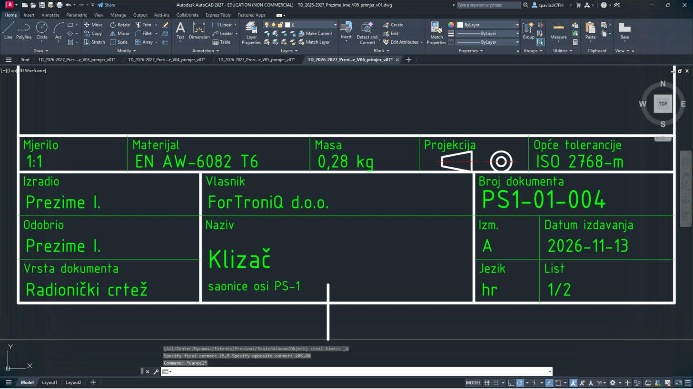
Zaglavlje iz V1 već je zaglavlje klizača – mijenjaš samo šest polja. Vrsta dokumenta ostaje Radionički crtež, broj PS1-01-004.
EList 2: dvostruko veći okvir za mjerilo 1:2
6
Ploča P14 je velika (240 × 240 mm) pa je crtaš u stvarnoj veličini na okviru dvostruko većem od A4 (420 × 594), a ispisuješ je u mjerilu 1:2 na A4. Udalji pogled:
ZOOM Enter W Enter -10,-10 Enter 660,604 Enter, pa COPY Enter W Enter -1,-1 Enter 211,298 Enter.Upiši:
ZOOM Enter W Enter -10,-10 Enter 660,604 Enter COPY Enter W Enter -1,-1 Enter 211,298 Enter

Odabran je cijeli list 1 (okvir i zaglavlje).
7
Enter, bazna točka
0,0 Enter, druga točka 230,0 Enter, Enter. Zatim povećaj kopiju: SCALE Enter W Enter 229,-1 Enter 441,298 Enter Enter, bazna točka 230,0 Enter, faktor 2 Enter.Upiši: (Enter)
0,0 Enter 230,0 Enter (Enter) SCALE Enter W Enter 229,-1 Enter 441,298 Enter (Enter) 230,0 Enter 2 Enter8
ZOOM Enter E Enter.Upiši:
ZOOM Enter E Enter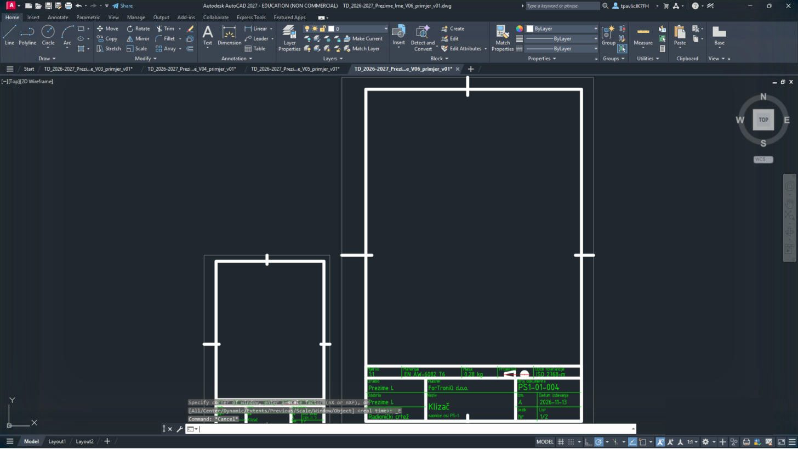
Lijevo list 1 (A4), desno dvostruko veći list 2 (230–650 × 0–594) – i zaglavlje je dvostruko veće, pa će na ispisu 1:2 izgledati kao na listu 1.
FDva stila kota: TD_1-1 i TD_1-2
9
Za list 1 treba stil TD_1-1 (DIMSCALE 1), a za list 2 stil TD_1-2 s DIMSCALE 2: kote se crtaju dvostruko veće pa su nakon ispisa 1:2 iste veličine kao na listu 1. Upiši redom (svaki
-DIMSTYLE s R, odnosno S):| # | Sloj | Naredba | Što upisuješ |
|---|---|---|---|
| 1 | -DIMSTYLE | R ISO-25 (vrati stil kota) | |
| 2 | DIMASZ | 3 | |
| 3 | DIMTXT | 3.5 | |
| 4 | DIMTXSTY | TD_ISO | |
| 5 | DIMSCALE | 1 | |
| 6 | DIMDEC | 0 | |
| 7 | DIMDSEP | , | |
| 8 | DIMTIH | 0 | |
| 9 | DIMTOH | 0 | |
| 10 | DIMTAD | 1 | |
| 11 | DIMEXO | 1 | |
| 12 | DIMEXE | 2 | |
| 13 | DIMGAP | 1 | |
| 14 | -DIMSTYLE | S TD_1-1 (spremi kao novi stil kota; ako pita Overwrite? – Y) | |
| 15 | -DIMSTYLE | R ISO-25 (vrati stil kota) | |
| 16 | DIMASZ | 3 | |
| 17 | DIMTXT | 3.5 | |
| 18 | DIMTXSTY | TD_ISO | |
| 19 | DIMSCALE | 2 | |
| 20 | DIMDEC | 0 | |
| 21 | DIMDSEP | , | |
| 22 | DIMTIH | 0 | |
| 23 | DIMTOH | 0 | |
| 24 | DIMTAD | 1 | |
| 25 | DIMEXO | 1 | |
| 26 | DIMEXE | 2 | |
| 27 | DIMGAP | 1 | |
| 28 | -DIMSTYLE | S TD_1-2 (spremi kao novi stil kota; ako pita Overwrite? – Y) |
Jedina razlika dvaju stilova je redak
DIMSCALE. Ako stil već postoji, AutoCAD pita treba li ga zamijeniti – Y.GList 1 – klizač: obris, osi i provrti
10
Približi list 1:
ZOOM Enter W Enter 20,110 Enter 200,282 Enter.Upiši:
ZOOM Enter W Enter 20,110 Enter 200,282 Enter11
Klizač je ploča 100 × 80 s tri provrta: dva Ø21 H7 za vodilice (razmak 64) i Ø22 H8 u sredini. Diobena kružnica Ø34 je na sloju osi. Svaki redak tablice je jedna naredba. Upiši naredbu, Enter, pa redom vrijednosti iz retka – nakon svake Enter. Strelica → znači „sljedeća točka“. Kad se u retku promijeni sloj, najprije odaberi taj sloj.
LINE i PLINE bez slova C završi još jednim Enter.| # | Sloj | Naredba | Što upisuješ |
|---|---|---|---|
| 1 | 01_VIDLJIVO | PLINE | 66,180 → 166,180 → 166,260 → 66,260 → C |
| 2 | 03_OSI | LINE | 116,177 → 116,263 |
| 3 | 03_OSI | LINE | 63,202 → 169,202 |
| 4 | 03_OSI | LINE | 84,188.5 → 84,215.5 |
| 5 | 03_OSI | LINE | 148,188.5 → 148,215.5 |
| 6 | 03_OSI | CIRCLE | središte 116,202, polumjer 17 |
| 7 | 01_VIDLJIVO | CIRCLE | središte 84,202, polumjer 10.5 |
| 8 | 01_VIDLJIVO | CIRCLE | središte 148,202, polumjer 10.5 |
| 9 | 01_VIDLJIVO | CIRCLE | središte 116,202, polumjer 11 |
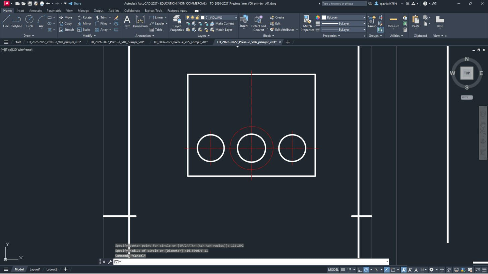
Pravokutnik s tri velike kružnice u donjem dijelu, osi i crvena diobena kružnica oko srednjeg provrta.
12
Navojne rupe: četiri M4 na diobenoj kružnici Ø34 i četiri M5 u gornjem dijelu (puna kružnica jezgre + tanki luk ¾ za nazivni promjer):
| # | Sloj | Naredba | Što upisuješ |
|---|---|---|---|
| 1 | 01_VIDLJIVO | CIRCLE | središte 128.0208,214.0208, polumjer 1.65 |
| 2 | 04_KOTE | ARC | C, središte 128.0208,214.0208, početak 127.6735,215.9904, kraj 129.9904,214.3681 |
| 3 | 04_KOTE | LINE | 124.8208,214.0208 → 131.2208,214.0208 |
| 4 | 04_KOTE | LINE | 128.0208,210.8208 → 128.0208,217.2208 |
| 5 | 01_VIDLJIVO | CIRCLE | središte 103.9792,214.0208, polumjer 1.65 |
| 6 | 04_KOTE | ARC | C, središte 103.9792,214.0208, početak 103.6319,215.9904, kraj 105.9488,214.3681 |
| 7 | 04_KOTE | LINE | 100.7792,214.0208 → 107.1792,214.0208 |
| 8 | 04_KOTE | LINE | 103.9792,210.8208 → 103.9792,217.2208 |
| 9 | 01_VIDLJIVO | CIRCLE | središte 103.9792,189.9792, polumjer 1.65 |
| 10 | 04_KOTE | ARC | C, središte 103.9792,189.9792, početak 103.6319,191.9488, kraj 105.9488,190.3265 |
| 11 | 04_KOTE | LINE | 100.7792,189.9792 → 107.1792,189.9792 |
| 12 | 04_KOTE | LINE | 103.9792,186.7792 → 103.9792,193.1792 |
| 13 | 01_VIDLJIVO | CIRCLE | središte 128.0208,189.9792, polumjer 1.65 |
| 14 | 04_KOTE | ARC | C, središte 128.0208,189.9792, početak 127.6735,191.9488, kraj 129.9904,190.3265 |
| 15 | 04_KOTE | LINE | 124.8208,189.9792 → 131.2208,189.9792 |
| 16 | 04_KOTE | LINE | 128.0208,186.7792 → 128.0208,193.1792 |
| 17 | 01_VIDLJIVO | CIRCLE | središte 86,230, polumjer 2.1 |
| 18 | 04_KOTE | ARC | C, središte 86,230, početak 85.5659,232.462, kraj 88.462,230.4341 |
| 19 | 04_KOTE | LINE | 82.3,230 → 89.7,230 |
| 20 | 04_KOTE | LINE | 86,226.3 → 86,233.7 |
| 21 | 01_VIDLJIVO | CIRCLE | središte 86,250, polumjer 2.1 |
| 22 | 04_KOTE | ARC | C, središte 86,250, početak 85.5659,252.462, kraj 88.462,250.4341 |
| 23 | 04_KOTE | LINE | 82.3,250 → 89.7,250 |
| 24 | 04_KOTE | LINE | 86,246.3 → 86,253.7 |
| 25 | 01_VIDLJIVO | CIRCLE | središte 146,230, polumjer 2.1 |
| 26 | 04_KOTE | ARC | C, središte 146,230, početak 145.5659,232.462, kraj 148.462,230.4341 |
| 27 | 04_KOTE | LINE | 142.3,230 → 149.7,230 |
| 28 | 04_KOTE | LINE | 146,226.3 → 146,233.7 |
| 29 | 01_VIDLJIVO | CIRCLE | središte 146,250, polumjer 2.1 |
| 30 | 04_KOTE | ARC | C, središte 146,250, početak 145.5659,252.462, kraj 148.462,250.4341 |
| 31 | 04_KOTE | LINE | 142.3,250 → 149.7,250 |
| 32 | 04_KOTE | LINE | 146,246.3 → 146,253.7 |
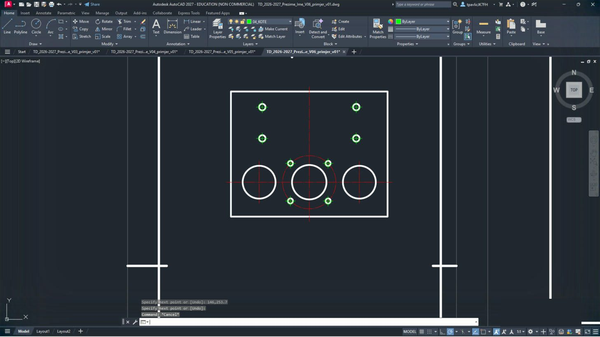
Osam malih rupa s lukom i križem osi.
HList 1 – presjek A-A
13
Rezna ravnina A-A ide kroz osi provrta. Ispod tlocrta nacrtaj presjek: stijenke između provrta šrafiraš, provrti ostaju prazni.
| # | Sloj | Naredba | Što upisuješ |
|---|---|---|---|
| 1 | 01_VIDLJIVO | LINE | 63,202 → 58,202 |
| 2 | 01_VIDLJIVO | LINE | 169,202 → 174,202 |
| 3 | 04_KOTE | -DIMSTYLE | R TD_1-1 (vrati stil kota) |
| 4 | 04_KOTE | LEADER | strelica 60.5,195.5 → kraj 60.5,202, Enter, Enter, N (strelica bez teksta) |
| 5 | 04_KOTE | LEADER | strelica 171.5,195.5 → kraj 171.5,202, Enter, Enter, N (strelica bez teksta) |
| 6 | 04_KOTE | TEXT | točka 57,189, visina 3.5, kut 0, tekst A |
| 7 | 04_KOTE | TEXT | točka 170,189, visina 3.5, kut 0, tekst A |
| 8 | 01_VIDLJIVO | PLINE | 66,135 → 73.5,135 → 73.5,150 → 66,150 → C |
| 9 | 05_SRAFURA | -HATCH | P, ANSI31, mjerilo 0.5, kut 0, W, N, granica: 66,135 → 73.5,135 → 73.5,150 → 66,150 → C, na kraju Enter |
| 10 | 01_VIDLJIVO | PLINE | 94.5,135 → 105,135 → 105,150 → 94.5,150 → C |
| 11 | 05_SRAFURA | -HATCH | P, ANSI31, mjerilo 0.5, kut 0, W, N, granica: 94.5,135 → 105,135 → 105,150 → 94.5,150 → C, na kraju Enter |
| 12 | 01_VIDLJIVO | PLINE | 127,135 → 137.5,135 → 137.5,150 → 127,150 → C |
| 13 | 05_SRAFURA | -HATCH | P, ANSI31, mjerilo 0.5, kut 0, W, N, granica: 127,135 → 137.5,135 → 137.5,150 → 127,150 → C, na kraju Enter |
| 14 | 01_VIDLJIVO | PLINE | 158.5,135 → 166,135 → 166,150 → 158.5,150 → C |
| 15 | 05_SRAFURA | -HATCH | P, ANSI31, mjerilo 0.5, kut 0, W, N, granica: 158.5,135 → 166,135 → 166,150 → 158.5,150 → C, na kraju Enter |
| 16 | 03_OSI | LINE | 84,132 → 84,153 |
| 17 | 03_OSI | LINE | 116,132 → 116,153 |
| 18 | 03_OSI | LINE | 148,132 → 148,153 |
| 19 | 04_KOTE | TEXT | točka 154,155, visina 5, kut 0, tekst A-A |
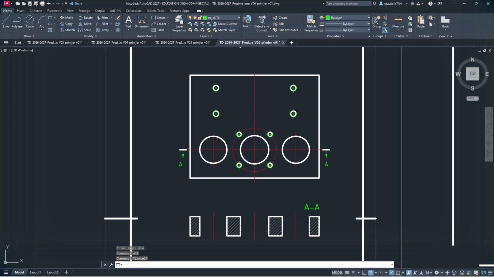
Oznake A lijevo i desno od tlocrta, ispod njega četiri šrafirana pravokutnika i natpis A-A.
Šrafura
-HATCH: P → ANSI31 → 0.5 → 0 → W → N → točke granice → C → Enter, kao u V3.IList 1 – kote, oznake i tolerancije
14
Kote tlocrta i presjeka (sloj 04_KOTE, stil TD_1-1). Najprije približi malo šire:
ZOOM Enter W Enter 15,62 Enter 205,282 Enter.Upiši:
ZOOM Enter W Enter 15,62 Enter 205,282 Enter| # | Sloj | Naredba | Što upisuješ |
|---|---|---|---|
| 1 | 04_KOTE | DIMLINEAR | 66,180 → 63,202, T Enter tekst 22 %%p0,02, V, mjesto kotne crte 52,191 |
| 2 | 04_KOTE | DIMLINEAR | 66,180 → 82.3,230, V, mjesto kotne crte 44,205 |
| 3 | 04_KOTE | DIMLINEAR | 66,180 → 82.3,250, V, mjesto kotne crte 36,215 |
| 4 | 04_KOTE | DIMLINEAR | 66,180 → 66,260, V, mjesto kotne crte 28,220 |
| 5 | 04_KOTE | DIMLINEAR | 86,253.7 → 146,253.7, H, mjesto kotne crte 116,268 |
| 6 | 04_KOTE | DIMLINEAR | 84,215.5 → 148,215.5, T Enter tekst 64 %%p0,02, H, mjesto kotne crte 116,276 |
| 7 | 04_KOTE | DIMLINEAR | 66,135 → 166,135, H, mjesto kotne crte 116,111 |
| 8 | 04_KOTE | DIMLINEAR | 66,135 → 66,150, V, mjesto kotne crte 56,142.5 |
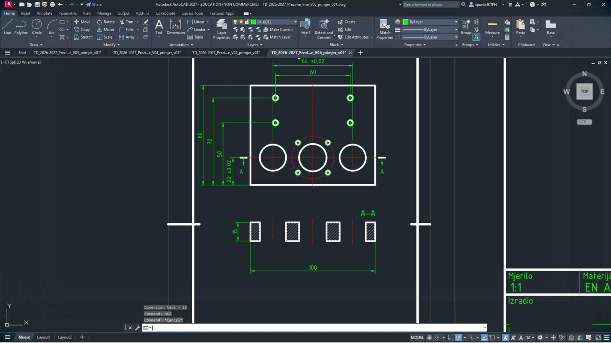
Kote 64 ±0,02 i 60 gore, 80, 70, 50 i 22 ±0,02 lijevo, 15 i 100 uz presjek.
Posebni znakovi:
%%c = Ø, %%p = ±, %%d = °; × upiši kao \U+00D7. Hrvatska slova (č, ć, š, ž) upisuješ izravno s tipkovnice.15
Oznake provrta i navoja (LEADER s tekstom), baza A i okvir okomitosti provrta Ø21 H7:
| # | Sloj | Naredba | Što upisuješ |
|---|---|---|---|
| 1 | 04_KOTE | LEADER | strelica 155.4246,209.4246 → kraj 170,224, Enter, tekst: 2 \U+00D7 %%c21 H7 (svaki redak Enter, na kraju još Enter) |
| 2 | 04_KOTE | LEADER | strelica 121.5,211.5263 → kraj 170,236, Enter, tekst: %%c22 H8 (svaki redak Enter, na kraju još Enter) |
| 3 | 04_KOTE | LEADER | strelica 129.435,215.435 → kraj 170,251, Enter, tekst: 4 \U+00D7 M4 / na %%c34 (svaki redak Enter, na kraju još Enter) |
| 4 | 04_KOTE | LEADER | strelica 147.7678,251.7678 → kraj 170,264, Enter, tekst: 4 \U+00D7 M5 (svaki redak Enter, na kraju još Enter) |
| 5 | 04_KOTE | -HATCH | P, SOLID, mjerilo _W, kut _N, W, N, granica: 99.75,132.23 → C, na kraju Enter |
| 6 | 04_KOTE | PLINE | 101.35,135 → 98.15,135 → 99.75,132.23 → C |
| 7 | 04_KOTE | LINE | 99.75,132.23 → 99.75,128.23 |
| 8 | 04_KOTE | PLINE | 96.25,121.23 → 103.25,121.23 → 103.25,128.23 → 96.25,128.23 → C |
| 9 | 04_KOTE | TEXT | točka 98.55,122.98, visina 3.5, kut 0, tekst A |
| 10 | 04_KOTE | PLINE | 170,214.5 → 199.25,214.5 → 199.25,221.5 → 170,221.5 → C |
| 11 | 04_KOTE | LINE | 173.5,216 → 173.5,220.2 |
| 12 | 04_KOTE | LINE | 171,216 → 176,216 |
| 13 | 04_KOTE | LINE | 177,214.5 → 177,221.5 |
| 14 | 04_KOTE | TEXT | točka 178.5,216.25, visina 3.5, kut 0, tekst %%c0,02 |
| 15 | 04_KOTE | LINE | 192.25,214.5 → 192.25,221.5 |
| 16 | 04_KOTE | TEXT | točka 194.55,216.25, visina 3.5, kut 0, tekst A |
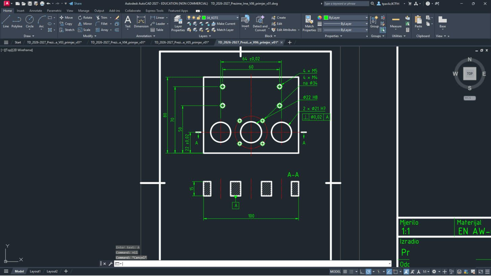
Desno od tlocrta četiri pokazne crte s oznakama, ispod njih okvir ⊥ Ø0,02 | A; baza A ispod presjeka.
16
Hrapavost provrta (Ra 0,8), napomena i opća oznaka hrapavosti iznad zaglavlja; zatim cijeli list:
ZOOM Enter W Enter -5,-5 Enter 215,300 Enter.Upiši:
ZOOM Enter W Enter -5,-5 Enter 215,300 Enter| # | Sloj | Naredba | Što upisuješ |
|---|---|---|---|
| 1 | 04_KOTE | LEADER | strelica 94.5,145 → kraj 86,157, Enter, Enter, N (strelica bez teksta) |
| 2 | 04_KOTE | LINE | 86,157 → 106,157 |
| 3 | 04_KOTE | PLINE | 87.1132,162 → 90,157 → 95.7735,167, Enter |
| 4 | 04_KOTE | LINE | 87.1132,162 → 92.8868,162 |
| 5 | 04_KOTE | LINE | 95.7735,167 → 112.4735,167 |
| 6 | 04_KOTE | TEXT | točka 96.5735,162.6, visina 3.5, kut 0, tekst Ra 0,8 |
| 7 | 04_KOTE | LEADER | strelica 127,145 → kraj 132,157, Enter, Enter, N (strelica bez teksta) |
| 8 | 04_KOTE | LINE | 132,157 → 152,157 |
| 9 | 04_KOTE | PLINE | 133.1132,162 → 136,157 → 141.7735,167, Enter |
| 10 | 04_KOTE | LINE | 133.1132,162 → 138.8868,162 |
| 11 | 04_KOTE | LINE | 141.7735,167 → 158.4735,167 |
| 12 | 04_KOTE | TEXT | točka 142.5735,162.6, visina 3.5, kut 0, tekst Ra 0,8 |
| 13 | 04_KOTE | TEXT | točka 24,60, visina 3.5, kut 0, tekst Opće tolerancije ISO 2768-m. Bridovi skošeni 0,5 \U+00D7 45%%d. |
| 14 | 04_KOTE | PLINE | 125.1132,69 → 128,64 → 133.7735,74, Enter |
| 15 | 04_KOTE | LINE | 125.1132,69 → 130.8868,69 |
| 16 | 04_KOTE | LINE | 133.7735,74 → 150.4735,74 |
| 17 | 04_KOTE | TEXT | točka 134.5735,69.6, visina 3.5, kut 0, tekst Ra 3,2 |
| 18 | 04_KOTE | TEXT | točka 152,65.5, visina 3.5, kut 0, tekst ( |
| 19 | 04_KOTE | PLINE | 155.1132,69 → 158,64 → 163.7735,74, Enter |
| 20 | 04_KOTE | LINE | 155.1132,69 → 160.8868,69 |
| 21 | 04_KOTE | LINE | 163.7735,74 → 180.4735,74 |
| 22 | 04_KOTE | TEXT | točka 164.5735,69.6, visina 3.5, kut 0, tekst Ra 0,8 |
| 23 | 04_KOTE | TEXT | točka 182,65.5, visina 3.5, kut 0, tekst ) |
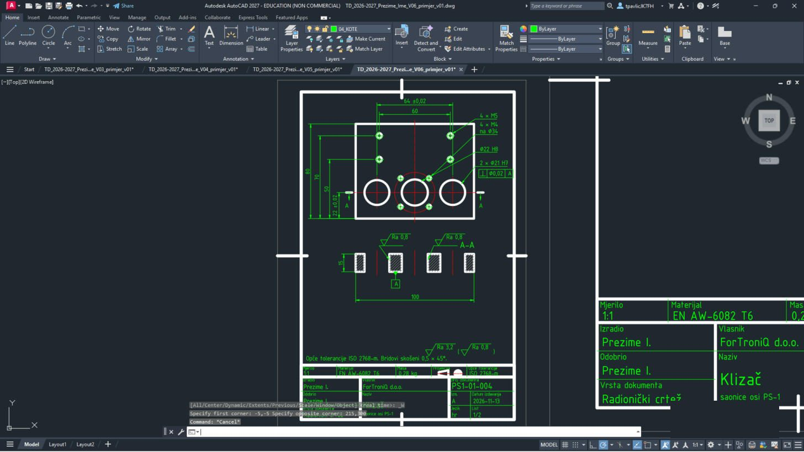
Gotov list 1: tlocrt, presjek A-A, kote, oznake, hrapavost i napomena iznad zaglavlja.
JList 2 – ploča P14 (crtež 1:1, ispis 1:2)
17
Približi list 2:
ZOOM Enter W Enter 280,140 Enter 640,565 Enter. Postavi CELTSCALE Enter 2 Enter – crtice osi moraju biti dvostruko dulje jer se list ispisuje upola manji.Upiši:
ZOOM Enter W Enter 280,140 Enter 640,565 Enter CELTSCALE Enter 2 Enter18
Ploča 240 × 240 s pet džepova u obliku zaobljenog romba (R10 / R20 i R15 / R30). Svaki džep je niz crta i lukova (
ARC → C → središte, početak, kraj):| # | Sloj | Naredba | Što upisuješ |
|---|---|---|---|
| 1 | 01_VIDLJIVO | PLINE | 340,200 → 580,200 → 580,440 → 340,440 → C |
| 2 | 03_OSI | LINE | 460,192 → 460,448 |
| 3 | 03_OSI | LINE | 332,320 → 588,320 |
| 4 | 01_VIDLJIVO | LINE | 387.5705,420.6687 → 358.7853,397.8344 |
| 5 | 01_VIDLJIVO | ARC | C, središte 365,390, početak 358.7853,397.8344, kraj 358.7853,382.1656 |
| 6 | 01_VIDLJIVO | LINE | 358.7853,382.1656 → 387.5705,359.3313 |
| 7 | 01_VIDLJIVO | ARC | C, središte 400,375, početak 387.5705,359.3313, kraj 412.4295,359.3313 |
| 8 | 01_VIDLJIVO | LINE | 412.4295,359.3313 → 441.2147,382.1656 |
| 9 | 01_VIDLJIVO | ARC | C, središte 435,390, početak 441.2147,382.1656, kraj 441.2147,397.8344 |
| 10 | 01_VIDLJIVO | LINE | 441.2147,397.8344 → 412.4295,420.6687 |
| 11 | 01_VIDLJIVO | ARC | C, središte 400,405, početak 412.4295,420.6687, kraj 387.5705,420.6687 |
| 12 | 03_OSI | LINE | 345,390 → 455,390 |
| 13 | 03_OSI | LINE | 400,345 → 400,435 |
| 14 | 01_VIDLJIVO | LINE | 507.5705,420.6687 → 478.7853,397.8344 |
| 15 | 01_VIDLJIVO | ARC | C, središte 485,390, početak 478.7853,397.8344, kraj 478.7853,382.1656 |
| 16 | 01_VIDLJIVO | LINE | 478.7853,382.1656 → 507.5705,359.3313 |
| 17 | 01_VIDLJIVO | ARC | C, središte 520,375, početak 507.5705,359.3313, kraj 532.4295,359.3313 |
| 18 | 01_VIDLJIVO | LINE | 532.4295,359.3313 → 561.2147,382.1656 |
| 19 | 01_VIDLJIVO | ARC | C, središte 555,390, početak 561.2147,382.1656, kraj 561.2147,397.8344 |
| 20 | 01_VIDLJIVO | LINE | 561.2147,397.8344 → 532.4295,420.6687 |
| 21 | 01_VIDLJIVO | ARC | C, središte 520,405, početak 532.4295,420.6687, kraj 507.5705,420.6687 |
| 22 | 03_OSI | LINE | 465,390 → 575,390 |
| 23 | 03_OSI | LINE | 520,345 → 520,435 |
| 24 | 01_VIDLJIVO | LINE | 387.5705,280.6687 → 358.7853,257.8344 |
| 25 | 01_VIDLJIVO | ARC | C, središte 365,250, početak 358.7853,257.8344, kraj 358.7853,242.1656 |
| 26 | 01_VIDLJIVO | LINE | 358.7853,242.1656 → 387.5705,219.3313 |
| 27 | 01_VIDLJIVO | ARC | C, središte 400,235, početak 387.5705,219.3313, kraj 412.4295,219.3313 |
| 28 | 01_VIDLJIVO | LINE | 412.4295,219.3313 → 441.2147,242.1656 |
| 29 | 01_VIDLJIVO | ARC | C, središte 435,250, početak 441.2147,242.1656, kraj 441.2147,257.8344 |
| 30 | 01_VIDLJIVO | LINE | 441.2147,257.8344 → 412.4295,280.6687 |
| 31 | 01_VIDLJIVO | ARC | C, središte 400,265, početak 412.4295,280.6687, kraj 387.5705,280.6687 |
| 32 | 03_OSI | LINE | 345,250 → 455,250 |
| 33 | 03_OSI | LINE | 400,205 → 400,295 |
| 34 | 01_VIDLJIVO | LINE | 507.5705,280.6687 → 478.7853,257.8344 |
| 35 | 01_VIDLJIVO | ARC | C, središte 485,250, početak 478.7853,257.8344, kraj 478.7853,242.1656 |
| 36 | 01_VIDLJIVO | LINE | 478.7853,242.1656 → 507.5705,219.3313 |
| 37 | 01_VIDLJIVO | ARC | C, središte 520,235, početak 507.5705,219.3313, kraj 532.4295,219.3313 |
| 38 | 01_VIDLJIVO | LINE | 532.4295,219.3313 → 561.2147,242.1656 |
| 39 | 01_VIDLJIVO | ARC | C, središte 555,250, početak 561.2147,242.1656, kraj 561.2147,257.8344 |
| 40 | 01_VIDLJIVO | LINE | 561.2147,257.8344 → 532.4295,280.6687 |
| 41 | 01_VIDLJIVO | ARC | C, središte 520,265, početak 532.4295,280.6687, kraj 507.5705,280.6687 |
| 42 | 03_OSI | LINE | 465,250 → 575,250 |
| 43 | 03_OSI | LINE | 520,205 → 520,295 |
| 44 | 01_VIDLJIVO | LINE | 441.3558,366.0031 → 398.1779,331.7515 |
| 45 | 01_VIDLJIVO | ARC | C, središte 407.5,320, početak 398.1779,331.7515, kraj 398.1779,308.2485 |
| 46 | 01_VIDLJIVO | LINE | 398.1779,308.2485 → 441.3558,273.9969 |
| 47 | 01_VIDLJIVO | ARC | C, središte 460,297.5, početak 441.3558,273.9969, kraj 478.6442,273.9969 |
| 48 | 01_VIDLJIVO | LINE | 478.6442,273.9969 → 521.8221,308.2485 |
| 49 | 01_VIDLJIVO | ARC | C, središte 512.5,320, početak 521.8221,308.2485, kraj 521.8221,331.7515 |
| 50 | 01_VIDLJIVO | LINE | 521.8221,331.7515 → 478.6442,366.0031 |
| 51 | 01_VIDLJIVO | ARC | C, središte 460,342.5, početak 478.6442,366.0031, kraj 441.3558,366.0031 |
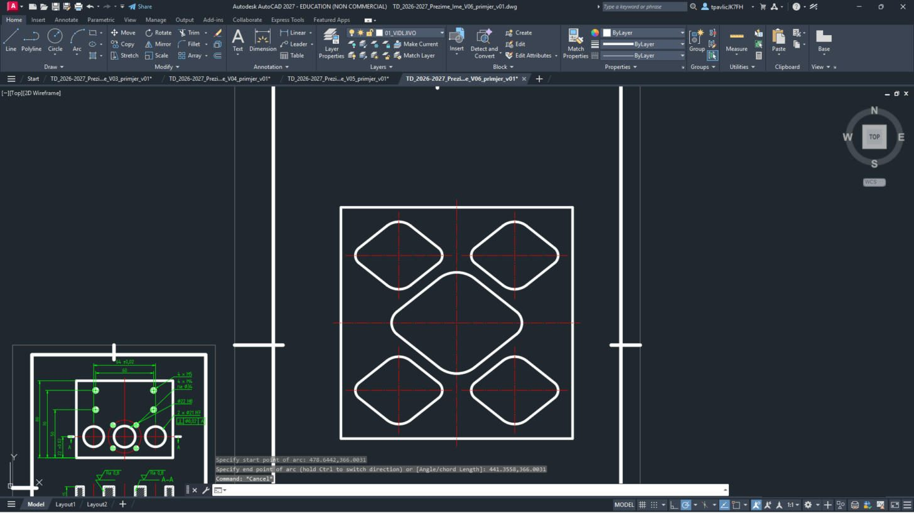
Kvadrat 240 × 240, četiri manja i jedan veći džep u sredini, osi džepova.
Lukovi se crtaju suprotno od kazaljke na satu od početne do krajnje točke – ako luk ispadne „s krive strane“, zamijenjene su točke.
19
Presjek A-A iznad ploče (rezna ravnina se lomi kroz džepove), oznake baza A i B. Ovdje vrijedi stil TD_1-2:
| # | Sloj | Naredba | Što upisuješ |
|---|---|---|---|
| 1 | 03_OSI | PLINE | 332,390 → 460,390 → 460,320 → 588,320, Enter |
| 2 | 01_VIDLJIVO | PLINE | 332,390 → 344,390, Enter |
| 3 | 01_VIDLJIVO | PLINE | 452,390 → 460,390 → 460,382, Enter |
| 4 | 01_VIDLJIVO | PLINE | 460,328 → 460,320 → 468,320, Enter |
| 5 | 01_VIDLJIVO | PLINE | 576,320 → 588,320, Enter |
| 6 | 04_KOTE | -DIMSTYLE | R TD_1-2 (vrati stil kota) |
| 7 | 04_KOTE | LEADER | strelica 337,390 → kraj 337,376, Enter, Enter, N (strelica bez teksta) |
| 8 | 04_KOTE | LEADER | strelica 583,320 → kraj 583,306, Enter, Enter, N (strelica bez teksta) |
| 9 | 04_KOTE | TEXT | točka 326,360, visina 7, kut 0, tekst A |
| 10 | 04_KOTE | TEXT | točka 579,292, visina 7, kut 0, tekst A |
| 11 | 01_VIDLJIVO | PLINE | 340,490 → 580,490 → 580,520 → 527.5,520 → 527.5,505 → 460,505 → 460,520 → 445,520 → 445,510 → 355,510 → 355,520 → 340,520 → C |
| 12 | 05_SRAFURA | -HATCH | P, ANSI31, mjerilo 1, kut 0, W, N, granica: 340,490 → 580,490 → 580,520 → 527.5,520 → 527.5,505 → 460,505 → 460,520 → 445,520 → 445,510 → 355,510 → 355,520 → 340,520 → C, na kraju Enter |
| 13 | 03_OSI | LINE | 460,484 → 460,526 |
| 14 | 04_KOTE | TEXT | točka 308,530, visina 10, kut 0, tekst A-A |
| 15 | 04_KOTE | -HATCH | P, SOLID, mjerilo _W, kut _N, W, N, granica: 334.46,425 → C, na kraju Enter |
| 16 | 04_KOTE | PLINE | 340,421.8 → 340,428.2 → 334.46,425 → C |
| 17 | 04_KOTE | LINE | 334.46,425 → 326.46,425 |
| 18 | 04_KOTE | PLINE | 312.46,418 → 326.46,418 → 326.46,432 → 312.46,432 → C |
| 19 | 04_KOTE | TEXT | točka 317.06,421.5, visina 7, kut 0, tekst A |
| 20 | 04_KOTE | -HATCH | P, SOLID, mjerilo _W, kut _N, W, N, granica: 565,194.46 → C, na kraju Enter |
| 21 | 04_KOTE | PLINE | 568.2,200 → 561.8,200 → 565,194.46 → C |
| 22 | 04_KOTE | LINE | 565,194.46 → 565,186.46 |
| 23 | 04_KOTE | PLINE | 558,172.46 → 572,172.46 → 572,186.46 → 558,186.46 → C |
| 24 | 04_KOTE | TEXT | točka 562.6,175.96, visina 7, kut 0, tekst B |
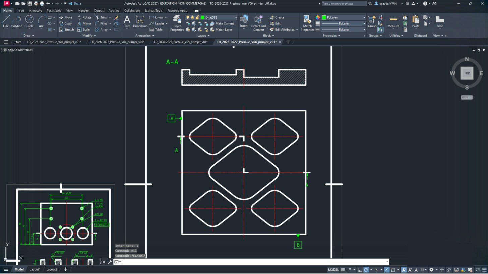
Iznad ploče šrafirani presjek s udubljenjima džepova i natpis A-A; uz ploču oznake A i B.
KList 2 – kote i hrapavost
20
Kote ploče i džepova (stil TD_1-2 – brojke su dvostruko veće, nakon ispisa 1:2 bit će 3,5 mm):
Upiši:
ZOOM Enter W Enter 265,118 Enter 645,568 Enter| # | Sloj | Naredba | Što upisuješ |
|---|---|---|---|
| 1 | 04_KOTE | DIMLINEAR | 340,200 → 400,192, H, mjesto kotne crte 370,184 |
| 2 | 04_KOTE | DIMLINEAR | 340,200 → 460,192, H, mjesto kotne crte 400,170 |
| 3 | 04_KOTE | DIMLINEAR | 340,200 → 520,192, H, mjesto kotne crte 430,156 |
| 4 | 04_KOTE | DIMLINEAR | 340,200 → 580,200, H, mjesto kotne crte 460,142 |
| 5 | 04_KOTE | DIMLINEAR | 340,200 → 332,250, V, mjesto kotne crte 324,225 |
| 6 | 04_KOTE | DIMLINEAR | 340,200 → 332,320, V, mjesto kotne crte 310,260 |
| 7 | 04_KOTE | DIMLINEAR | 340,200 → 332,390, V, mjesto kotne crte 296,295 |
| 8 | 04_KOTE | DIMLINEAR | 340,200 → 340,440, V, mjesto kotne crte 282,320 |
| 9 | 04_KOTE | DIMLINEAR | 365,390 → 435,390, H, mjesto kotne crte 400,429 |
| 10 | 04_KOTE | DIMLINEAR | 400,375 → 400,405, V, mjesto kotne crte 382,390 |
| 11 | 04_KOTE | DIMLINEAR | 407.5,320 → 512.5,320, H, mjesto kotne crte 460,366 |
| 12 | 04_KOTE | DIMLINEAR | 460,297.5 → 460,342.5, V, mjesto kotne crte 424,320 |
| 13 | 04_KOTE | LEADER | strelica 406.8404,423.7939 → kraj 425,452, Enter, tekst: R20 (svaki redak Enter, na kraju još Enter) |
| 14 | 04_KOTE | LEADER | strelica 443.6603,395 → kraj 452,414, Enter, tekst: R10 (svaki redak Enter, na kraju još Enter) |
| 15 | 04_KOTE | LEADER | strelica 475,368.4808 → kraj 500,390, Enter, tekst: R30 (svaki redak Enter, na kraju još Enter) |
| 16 | 04_KOTE | LEADER | strelica 525.4904,312.5 → kraj 545,292, Enter, tekst: R15 (svaki redak Enter, na kraju još Enter) |
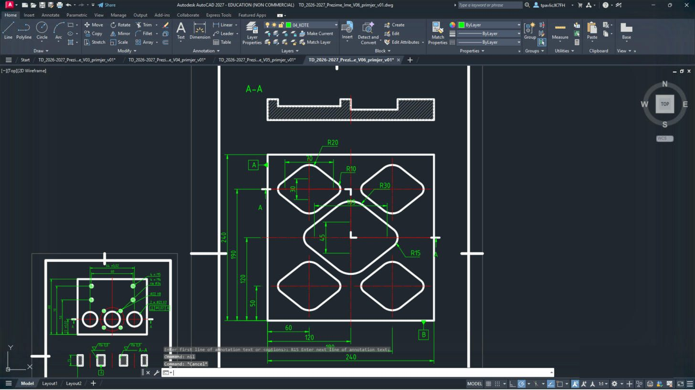
Kote od baza: 60, 120, 180, 240 dolje i 50, 120, 190, 240 lijevo, polumjeri R10, R15, R20, R30 i mjere džepova.
Približi prije kotiranja:
ZOOM W 265,118 645,568.21
Kote presjeka (dubine džepova), hrapavost i napomena iznad zaglavlja:
| # | Sloj | Naredba | Što upisuješ |
|---|---|---|---|
| 1 | 04_KOTE | DIMLINEAR | 340,490 → 340,520, V, mjesto kotne crte 324,505 |
| 2 | 04_KOTE | DIMLINEAR | 370,510 → 370,520, V, mjesto kotne crte 370,515 |
| 3 | 04_KOTE | DIMLINEAR | 520,505 → 520,520, V, mjesto kotne crte 520,512.5 |
| 4 | 04_KOTE | PLINE | 374.2265,520 → 380,510 → 391.547,530, Enter |
| 5 | 04_KOTE | LINE | 374.2265,520 → 385.7735,520 |
| 6 | 04_KOTE | LINE | 391.547,530 → 424.947,530 |
| 7 | 04_KOTE | TEXT | točka 393.147,521.2, visina 7, kut 0, tekst Ra 3,2 |
| 8 | 04_KOTE | PLINE | 462.2265,515 → 468,505 → 479.547,525, Enter |
| 9 | 04_KOTE | LINE | 462.2265,515 → 473.7735,515 |
| 10 | 04_KOTE | LINE | 479.547,525 → 512.947,525 |
| 11 | 04_KOTE | TEXT | točka 481.147,516.2, visina 7, kut 0, tekst Ra 3,2 |
| 12 | 04_KOTE | PLINE | 559.2265,530 → 565,520 → 576.547,540, Enter |
| 13 | 04_KOTE | LINE | 559.2265,530 → 570.7735,530 |
| 14 | 04_KOTE | LINE | 576.547,540 → 609.947,540 |
| 15 | 04_KOTE | TEXT | točka 578.147,531.2, visina 7, kut 0, tekst Ra 1,6 |
| 16 | 04_KOTE | LEADER | strelica 400,490 → kraj 385,472, Enter, Enter, N (strelica bez teksta) |
| 17 | 04_KOTE | LINE | 385,472 → 335,472 |
| 18 | 04_KOTE | PLINE | 334.2265,482 → 340,472 → 351.547,492, Enter |
| 19 | 04_KOTE | LINE | 334.2265,482 → 345.7735,482 |
| 20 | 04_KOTE | LINE | 351.547,492 → 384.947,492 |
| 21 | 04_KOTE | TEXT | točka 353.147,483.2, visina 7, kut 0, tekst Ra 1,6 |
| 22 | 04_KOTE | TEXT | točka 278,128, visina 7, kut 0, tekst Opće tolerancije ISO 2768-m. |
| 23 | 04_KOTE | TEXT | točka 278,117, visina 7, kut 0, tekst Položaj džepova %%p0,1. Bridovi skošeni 0,5 \U+00D7 45%%d. |
| 24 | 04_KOTE | PLINE | 494.2265,126 → 500,116 → 511.547,136, Enter |
| 25 | 04_KOTE | LINE | 494.2265,126 → 505.7735,126 |
| 26 | 04_KOTE | LINE | 511.547,136 → 544.947,136 |
| 27 | 04_KOTE | TEXT | točka 513.147,127.2, visina 7, kut 0, tekst Ra 6,3 |
| 28 | 04_KOTE | TEXT | točka 548,119, visina 7, kut 0, tekst ( |
| 29 | 04_KOTE | PLINE | 554.2265,126 → 560,116 → 571.547,136, Enter |
| 30 | 04_KOTE | LINE | 554.2265,126 → 565.7735,126 |
| 31 | 04_KOTE | TEXT | točka 572,119, visina 7, kut 0, tekst ) |
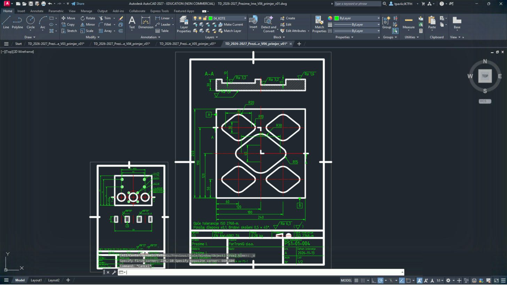
Na presjeku 30, 10 i 15; oznake Ra 3,2 i Ra 1,6; iznad zaglavlja napomena o tolerancijama i Ra 6,3 (√).
LList 2 – zaglavlje
22
Približi zaglavlje:
ZOOM Enter, W Enter, 265,10 Enter, 635,120 Enter. Upiši TEXTEDIT Enter i promijeni tekstove (klik na tekst → upiši novi → Enter; na kraju Esc):Upiši:
ZOOM Enter W Enter 265,10 Enter 635,120 Enter TEXTEDIT Enter| Polje | Sada piše (kopija lista 1) | Upiši |
|---|---|---|
| Mjerilo | 1:1 | 1:2 |
| Masa | 0,28 kg | 3,87 kg |
| Naziv | Klizač | Ploča P14 |
| ispod naziva | saonice osi PS-1 | radionički crtež |
| Broj dokumenta | PS1-01-004 | TD-2026-P14-01 |
| List | 1/2 | 2/2 |
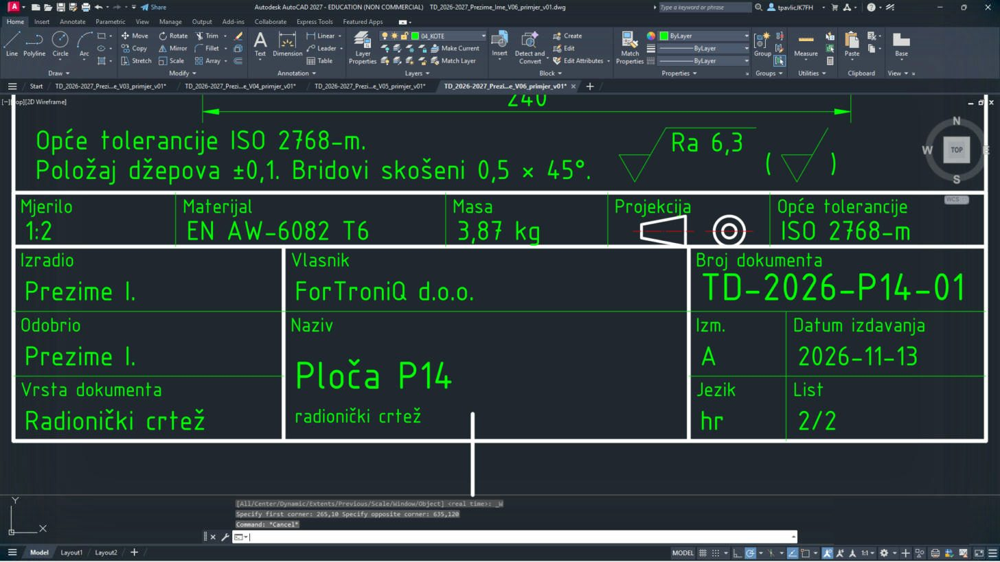
Zaglavlje je dvostruko veće, pa ga približavaš prozorom
265,10 – 635,120.23
Upiši
CELTSCALE Enter 1 Enter i ZOOM Enter E Enter.Upiši:
CELTSCALE Enter 1 Enter ZOOM Enter E Enter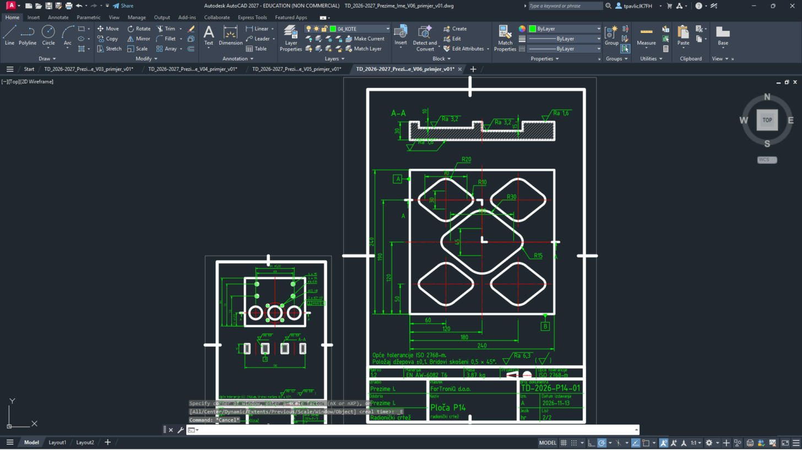
Oba lista: klizač na A4 i ploča P14 na dvostrukom A4.
RIspis u PDF
24
Pritisni Ctrl + P. Postavke iz V1 su zapamćene (DWG To PDF.pc3, ISO full bleed A4, Window, Center the plot, monochrome.ctb). Za svaki list klikni Window< i upiši njegova dva kuta iz tablice.


25
Namjesti Scale prema tablici, klikni OK i spremi PDF pod imenom iz tablice.
| List | Window – prvi kut | Window – drugi kut | Scale | Ime PDF-a |
|---|---|---|---|---|
| 1 – klizač | 0,0 | 210,297 | 1:1 | TD_2026-2027_Prezime_Ime_V06_L1 |
| 2 – ploča P14 | 230,0 | 650,594 | 1:2 | TD_2026-2027_Prezime_Ime_V06_L2 |


ZSpremi, vrati postavke i predaj
26
Vrati postavke:
DYNMODE → 3, OSMODE → 4133, GRIDMODE → 1; zatim QSAVE Enter.Upiši:
DYNMODE Enter 3 Enter OSMODE Enter 4133 Enter GRIDMODE Enter 1 Enter QSAVE Enter27
U sustavu za predaju, u zadaći za V6, predaj
TD_2026-2027_Prezime_Ime_V06.dwg i …_L1.pdf, …_L2.pdf, uz ispunjen radni list.Prije predaje otvori svaki PDF i usporedi ga sa slikom na vrhu upute.